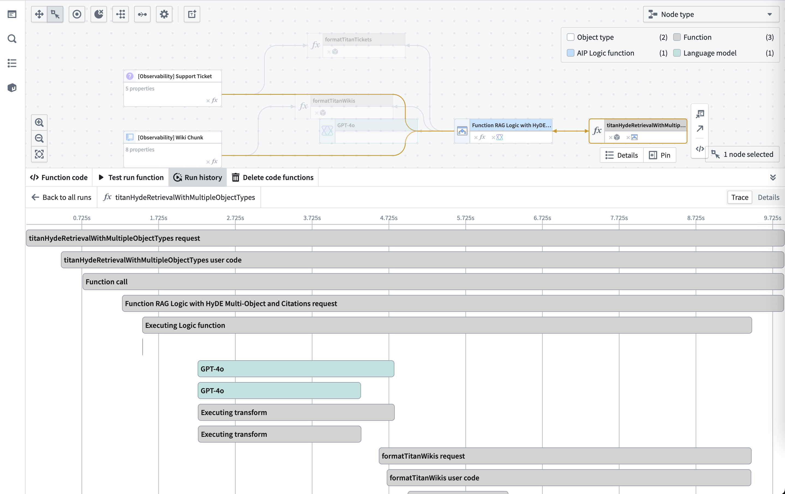
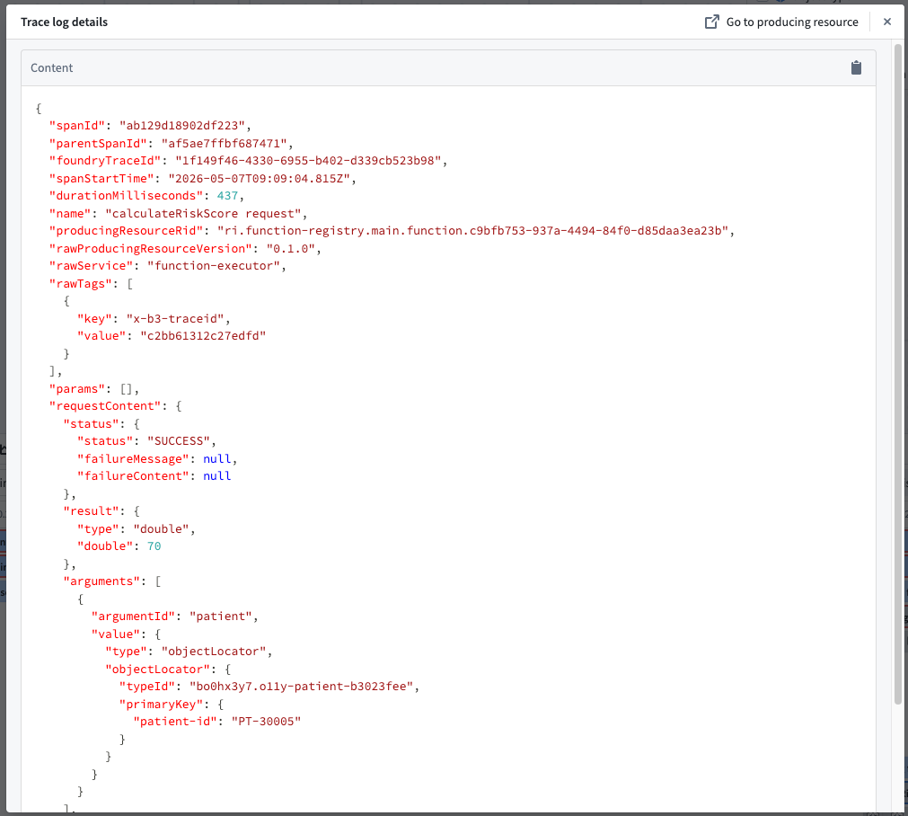

The Trace view provides a visual timeline of your workflow execution, showing how different services interact and where time is spent. Specifically, a distributed trace is the timeline comprising all of the events between the generation of a request and the receipt of a response; these events can cross process, network and security boundaries. Distributed traces are key to understanding the path a request takes within your application.
To view traces and service logs, an administrator must enable log access for the relevant project. Users always have access to logs for their own executions from the past 24 hours, except on CBAC stacks, where log access must be enabled to view trace and service logs.

You can select any span to see the full Trace Log Details for that specific operation.
Trace details include:
foundryTraceId, the Foundry-assigned identifier used to fetch telemetry, and x-b3-traceid, the standard distributed-tracing identifier included in the tags field on each service log entry (best-effort; may be absent on logs originating outside Foundry, such as applications built with the Ontology SDK).